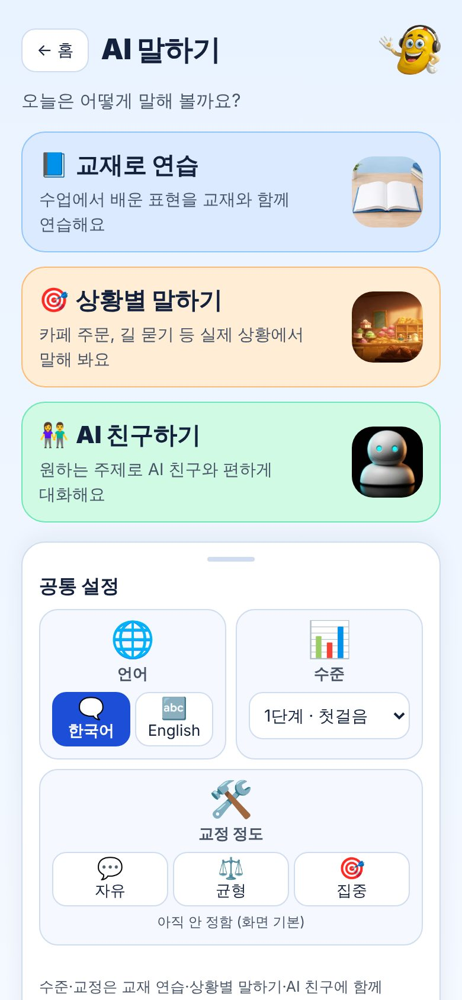
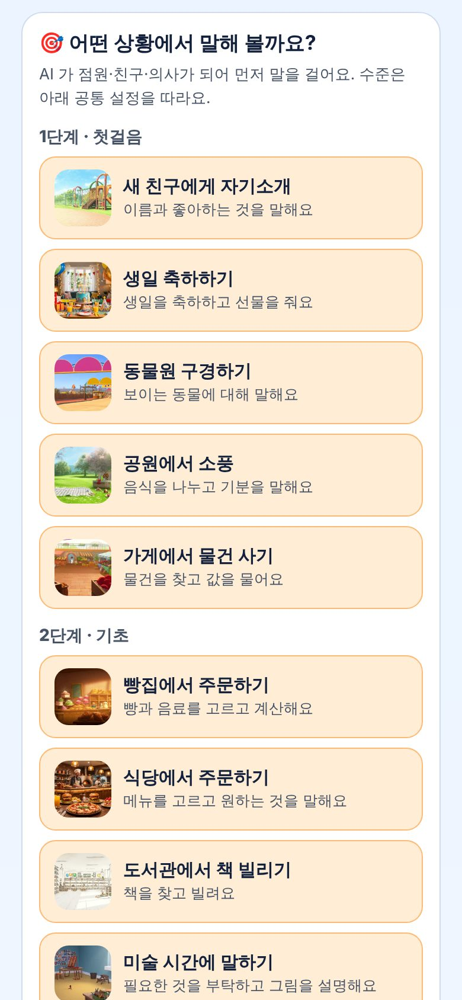
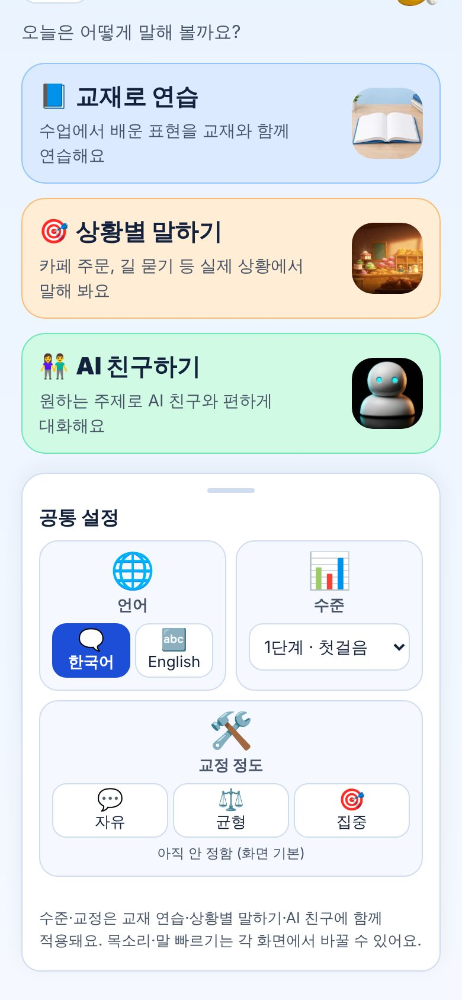
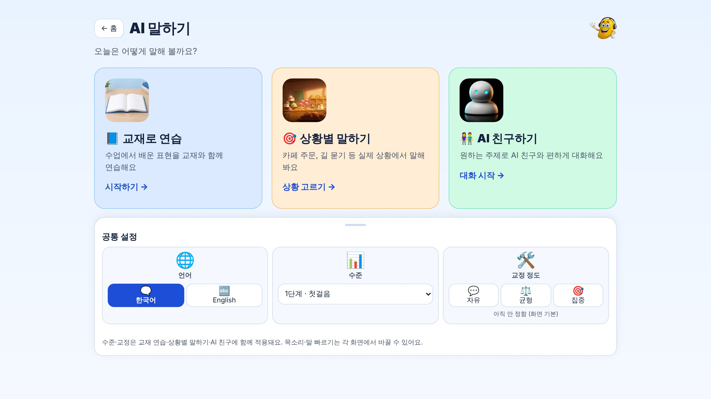

교재로 연습 · 상황별 말하기 · AI 친구하기 + 공통 설정 | 2026-11-03 | 망고아이
| 사장님 결정 | 반영 |
|---|---|
| 자유대화 카드 | 없애고 «상황별 말하기» 로 교체 (같은 대화는 교재 연습 화면의 «교정 정도: 자유» 로 가능) |
| 대상 | 어린이·청소년 — 상황도 학교·놀이·가족 생활 중심 |
| 상황 단계 | 5단계 취소 → 4단계, 단계마다 5개 = 20개 |
| 중국어 | 뺐습니다 — 상황 대화는 영어만, 화면에 한자 없음 |
| 언어 칸 | 화면 글자 한국어 / English (추천안) |
| 공통 설정 | 이모지 타일(🌐 언어 · 📊 수준 · 🛠️ 교정 정도) |
| 그림 | 힉스필드 asset 사용 — 남은 일(8장 참고) |




PC 1366×768 — 카드 3장 가로. 폰은 세로 줄 카드이고 360×640 작은 폰에서도 카드 3장이 첫 화면에 다 보입니다(실측).
/warmup.html)을 그대로 엽니다 — 교재·과 고르기, AI 가 먼저 질문, 대답 힌트, 교정 카드./ai-friend.html)을 그대로 엽니다. 수준·교정은 공통 설정 값을 이어 받습니다.| 단계 | 상황 | AI 역할 | AI 첫 말 |
|---|---|---|---|
| 1단계 · 첫걸음 | 🙋 새 친구에게 자기소개 이름과 좋아하는 것을 말해요 | 학교에서 처음 만난 새 친구 | Hi! I am new here. What is your name? |
| 🎂 생일 축하하기 생일을 축하하고 선물을 줘요 | 오늘 생일인 친구 | Hi! Thank you for coming to my birthday party! | |
| 🦁 동물원 구경하기 보이는 동물에 대해 말해요 | 친절한 동물원 사육사 | Welcome to the zoo! Which animal do you want to see first? | |
| 🧺 공원에서 소풍 음식을 나누고 기분을 말해요 | 함께 소풍 온 친구 | What a sunny day! Do you want a sandwich or some fruit? | |
| 🛒 가게에서 물건 사기 물건을 찾고 값을 물어요 | 가게 직원 | Hello! Can I help you find something? | |
| 2단계 · 기초 | 🥐 빵집에서 주문하기 빵과 음료를 고르고 계산해요 | 빵집 점원 | Hi! Welcome to Mango Bakery. What would you like? |
| 🍽️ 식당에서 주문하기 메뉴를 고르고 원하는 것을 말해요 | 식당 직원 | Hello! Here is your menu. What would you like to eat? | |
| 📚 도서관에서 책 빌리기 책을 찾고 빌려요 | 도서관 사서 | Hello! What kind of book are you looking for today? | |
| 🎨 미술 시간에 말하기 필요한 것을 부탁하고 그림을 설명해요 | 미술 선생님 | Wow, nice drawing! What are you drawing today? | |
| 🐠 아쿠아리움 표 사기 표 수와 가격을 물어요 | 아쿠아리움 매표소 직원 | Hello! How many tickets would you like? | |
| 3단계 · 초급 | 🗺️ 길 묻기 가고 싶은 곳을 묻고 길을 들어요 | 길에서 만난 친절한 어른 | Hi there! You look a little lost. Can I help you? |
| 📞 전화로 약속 잡기 만날 날짜와 시간을 정해요 | 전화를 받은 친구 | Hello? Oh, hi! Do you want to play this weekend? | |
| ⚽ 축구부 들어가기 잘하는 것과 연습 시간을 이야기해요 | 학교 축구부 코치 | Hi! Do you want to join our soccer team? | |
| 🎸 학교 밴드 오디션 연주하는 악기와 좋아하는 노래를 말해요 | 학교 밴드 선생님 | Welcome to band practice! Which instrument do you play? | |
| ⛺ 캠핑 계획 세우기 가져갈 것과 할 일을 정해요 | 함께 캠핑 가는 친구 | Our camping trip is this Saturday! What should we bring? | |
| 4단계 · 중급 | 🏥 병원에서 증상 말하기 어디가 아픈지 설명해요 | 친절한 소아과 의사 | Hello, please have a seat. How are you feeling today? |
| 🔄 물건 교환하기 산 물건의 문제를 설명해요 | 가게 직원 | Hi, how can I help you today? | |
| 🚆 기차표 사기 시간과 자리를 골라 표를 사요 | 기차역 매표소 직원 | Good morning! Where would you like to go today? | |
| 🤖 과학관 체험하기 로봇과 과학에 대해 질문해요 | 과학관 안내원 | Welcome to the science museum! This robot can talk. What do you want to ask it? | |
| 🏅 운동회 인터뷰 경기와 그때 기분을 이야기해요 | 학교 방송부 기자 | Congratulations! You ran so fast. How do you feel right now? |
«단계» 는 목록 묶음입니다. 대화 난이도는 공통 설정의 수준(1~8)이 정합니다 — 엔진이 8단계라 바꾸면 기존 학생 저장값이 어긋나므로 그대로 둡니다.
| 칸 | 고를 수 있는 것 | 저장 |
|---|---|---|
| 🌐 언어 | 🗨️ 한국어 / 🔤 English (화면 글자) | 사이트 공용 언어 키 — 다른 화면 언어도 같이 따라감 |
| 📊 수준 | 1~8단계 (첫걸음 … 최상급) | 교재 연습·AI 친구 두 화면에 함께 |
| 🛠️ 교정 정도 | 💬 자유 / ⚖️ 균형 / 🎯 집중 | 교재 연습·AI 친구 두 화면에 함께 |
| 파일 | 역할 |
|---|---|
public/ai-speaking.html | 첫 화면(카드 3장·상황 목록·공통 설정) |
public/js/ai-situations.js | 상황 20개 표(정본) — 이름·설명·사진·AI 첫 말·대답 보기·역할 |
public/js/ai-speaking-settings.js | 공통 설정 읽기·저장(정본) |
public/warmup.html | ?sit=<상황> 을 받아 역할극으로 시작 |
test-harness/ai_speaking_entry_harness.mjs | 자동 검사 |
src/index.ts)는 고치지 않았습니다 — 웜업이 이미 받는 «대화 주제» 통로로 역할 지시를 보냅니다.| 단계 | 내용 | 상태 |
|---|---|---|
| 1단계 | 카드 3장 화면 · 상황 20개 · 공통 설정 · 웜업 연결 · 검사 | ✅ 완료(배포 대기) |
| 2단계 | 그림을 힉스필드 asset 으로 교체 | ⏳ 그림 전달 필요 |
| 3단계 | 상황마다 «목표 문장 3개» 체크 + 끝나면 「주문 성공!」 결과 카드 | 서버 지시 추가 — 승인 필요 |
| 4단계 | 역할 바꾸기(학생이 점원) · 상황별 진도 기록 · 포인트 | 3단계 뒤 |